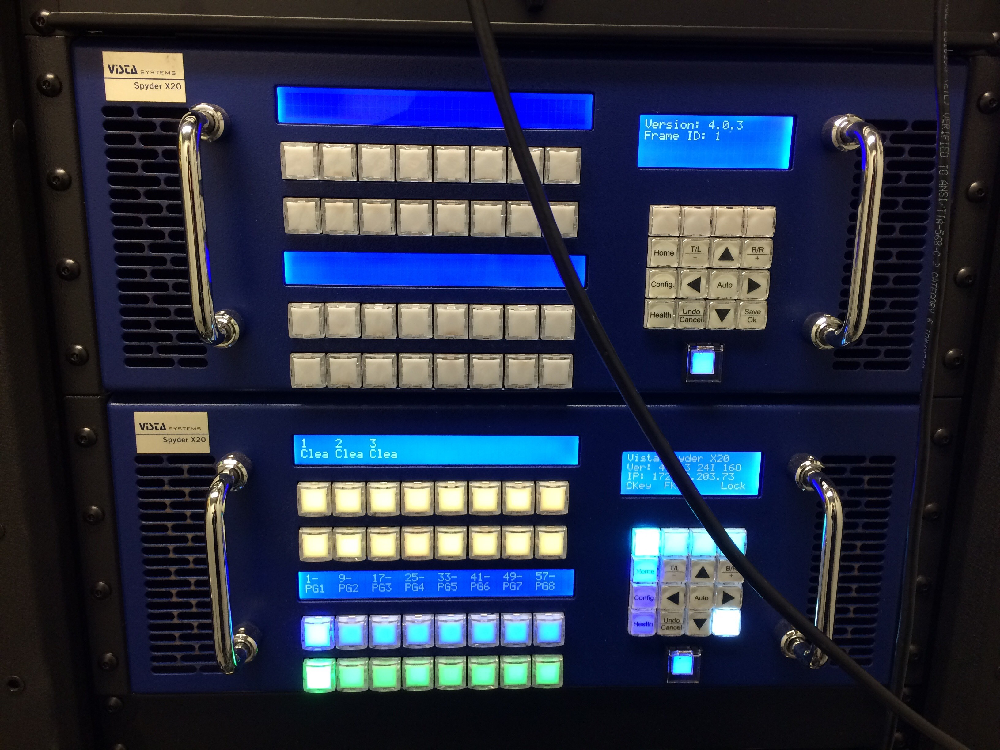
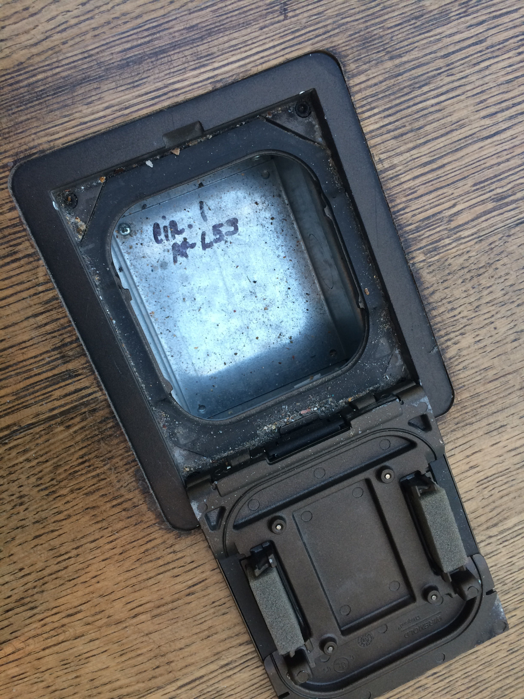
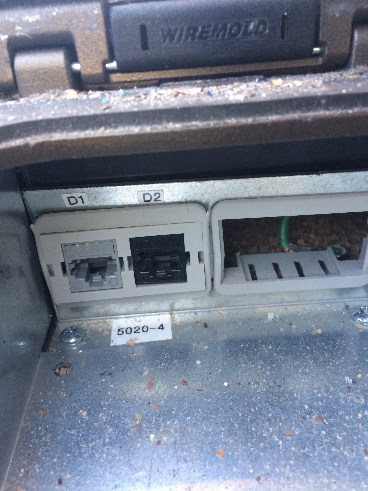
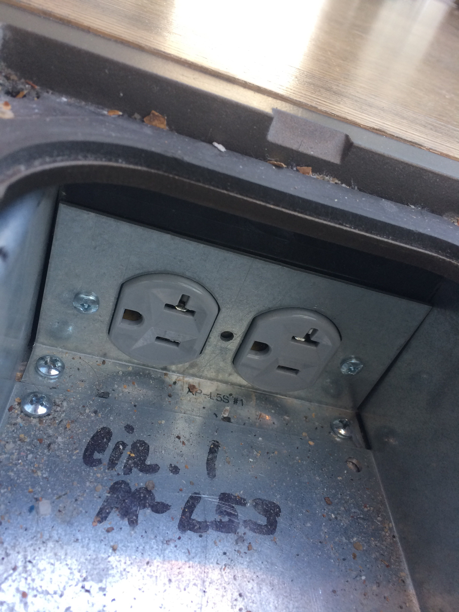

Lightbox Toolkit
Documentation on the Lightbox Gallery for collaborators and operators
Lightbox Toolkit
This toolkit provides information on, and specifications about, the Lightbox Gallery and its equipment.
Index of tasks
Adjusting the volume
Changing the layout of the screens
Loading files...
With a disk
With a USB stick: in the network closet or in the gallery
With Dropbox or another cloud storage service
Scheduling the displays to turn on or off
Turning the PCs on
Using the HDMI cable in the gallery
Specification notes:

There is a wall of nine screens on the east side of the Lightbox Gallery.
- Overall, it is 142.50 inches wide and 80.25 inches tall. (362cm x 204cm)
- Each individual screen is 47.50 inches wide and 26.75 inches tall. (120.65cm x 68.00cm)
- It has a resolution, all the screens together, of 5760 by 3240 pixels.
- It has four speakers, as well as wireless microphones.
- Behind each screen are a pair of Ethernet ports, which carry the AV signal up from the network closet, and a pair of electrical outlets.
There are also two projectors, which face the wall of shades on the west side of the Lightbox Gallery.
- The projection area is 240.0 inches wide and 67.5 inches tall. (610.0cm x 171.5cm)
- It has a combined resolution of 3840 x 1080 pixels.
- It covers the center four shades on the west wall of the gallery.
- The shades are controlled via a VPN.
Each of the two displays is controlled by a PC running Windows 7. They come installed with Kiosk Launcher (which opens a full screen kiosk mode IE 11 web browser), Processing 2, Processing 3, and VLC. Note that the taskbar can also be hidden with Ctrl+Esc. Other programs can be installed as needed.
Available controllers for interaction include a variety of remotes, keyboards, joysticks, and mice. Keyboards with built-in trackpads that connect to each of the PCs can be found behind the screens on the righthand side. Note that they must be turned on before using, and turned off after use.
Video is processed by two Vista Spyder X20s, and controlled with a Crestron Pro-3.
  Two boxes located in the center of the gallery floor also contain a variety of power, network, and utility lines.